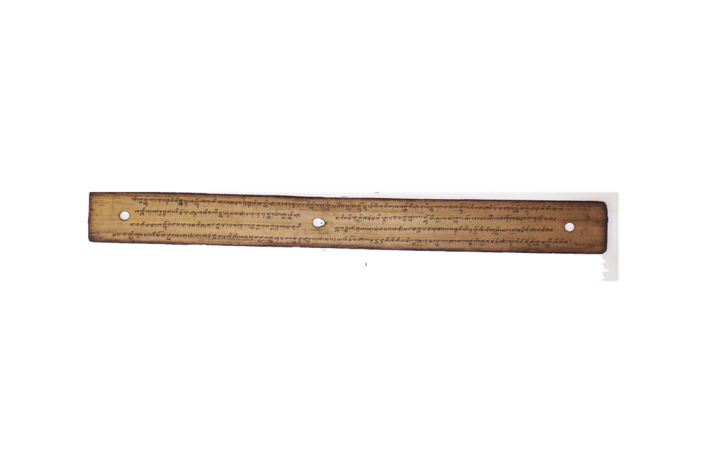

INDAR JAYA
-

Ejaan Latin:
167. bini laki pada gruq,dateng laiq desana,bareng dnganna si bini,wah tama laiq dalem padalemman.Sabiniqna daduwaqna bakatwan leq si laki,saisine dngan kakaq,lndarjaya nu bamanik,ya enu madun adiq,inaqna siq lndardewa nu,nane dewa patuh pada,puteri daduwaqna nimbal glis,mran samanik pengkaji ndeq bangga. Banjur putri daduwaqna,kapong madun bagagenti,saling siduk tatluqna,banjurna pada tasajiq,empatna dngan si laki,pada bareng nada banjur,wahna nada baseppaq, ·pada bakti leq salaki,liwat patuh madun maraq tunggal inaq. Indarjaya nane kocap,bamanik laiq sabini,. nane tatluq yaq kuajah,tantu bakti leq Allah lewih,adeq·pada ngambakti,jrah belin limang waktu,nane kocap lndardewa,madeq mesaqna tunggu niniq,siq saling kangen ndeqna pgat bararondang.Kocapna Ratu Wijaya,tanikaqna Raden Patih,aloh undang ratu warang,tatluqna mwang para mantri,kacarita patih glis,
Arti Indonesia:
167. laki wanita berbondong-bondong,tiba di negerinya,bersama dengan sang isteri,sudah masuk ke dalam puri.lsterinya berdua bertanya pada suarriinya,siapa ini bersama kanda,Indarjaya berkata,dia itu madu adinda,ibunya lndardewa,sekarang adinda rukun bersama,puteri berdua menjawab cepat;baiklah segala titah tuanku tidak kamu.sangkal.Kemudian puteri keduanya,memeluk madunya bergantian,saling cium ketiganya, .lalu mereka dihidangkan, ·berempat dengan suaminya,sama-sama makan mereka,setelah makan lalu nginang,sama-sama berbakti pada suami, ·amat rukun bermadu seperti satu ibu.Indarjaya sekar;mg tersebut,berkata kepada isterinya,sekarang ketigamu akan kuajar, .cara orang berbakti kepada Allah Maha K\lasa,agar kalian bersembahyang,jangan tinggalkan yang lima waktu,sekarang tersebutlah lndardewa,tinggal sendiri menjaga kakeknya,karena saling menyayang tak putusnya selalu berdua;Alkisah Ratu Wijaya,memerintahkan Raden Patih,pergilah undang ratu besan,ketiganya juga para mantri,diceriterakan patih segera,mempersilahkan raja yang tiga,semuanya datang sudah,diikuti para mantri,Sahimerdan kabarnya pada malamnya·meniatkan.
Arti Inggris:
167.